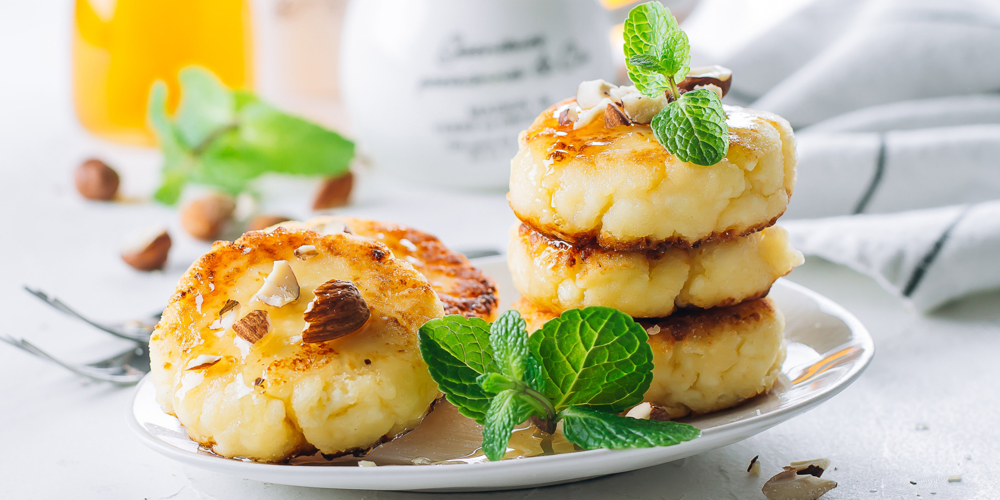
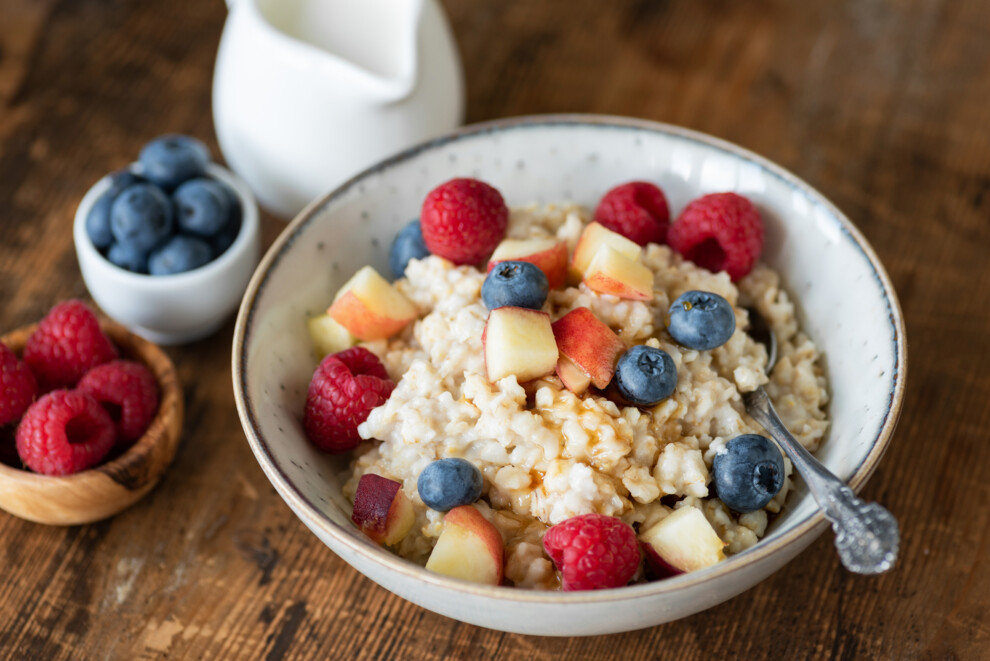
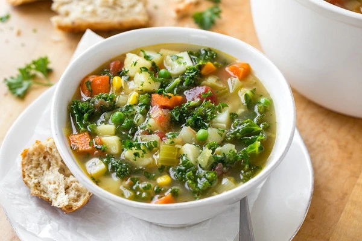
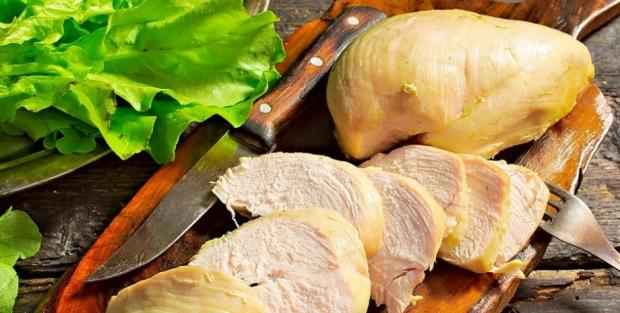
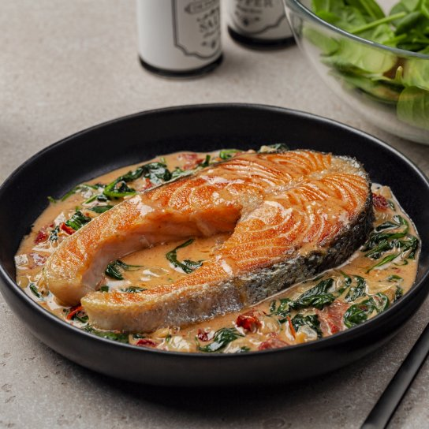
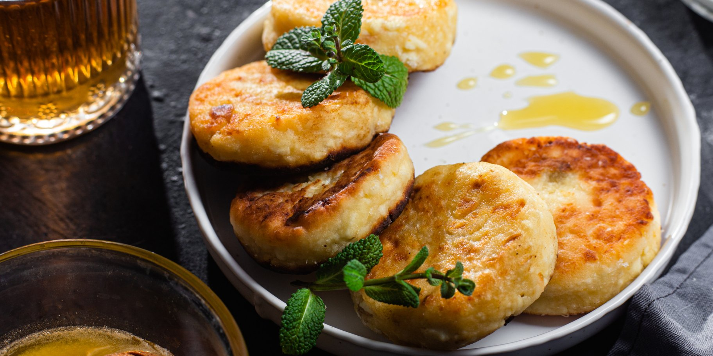
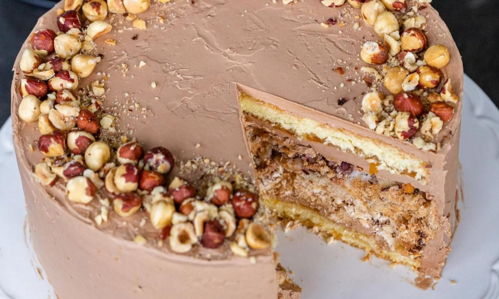
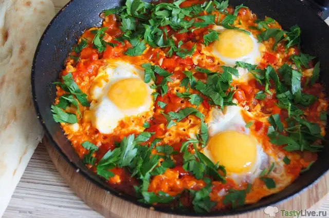
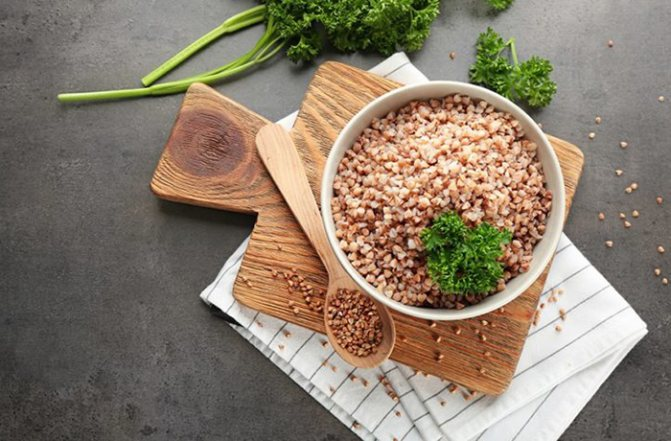
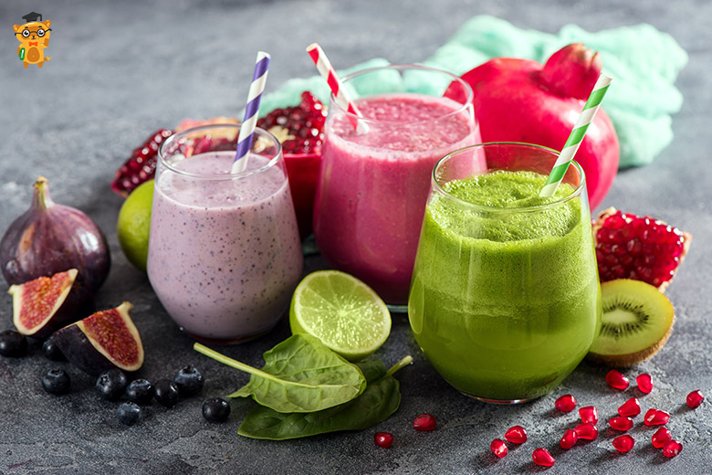

Корисні сирники «Київський торт» — для тих, хто на дієті

Інградієнти:
Сир 250 г
Цукор 30 г
Харчовий ароматизатор 5 г
Борошно пшеничне 1 ст. л.
Борошно горіхове 1 ст. л.
Мелені горіхи 2 ст. л.
Арахісова паста 30 г
Крем заварний 200 мл
Олія соняшникова 30 мл
Спосіб приготування:
Змішайте сир, цукор, ароматизатор, пшеничне і горіхове борошно до однорідної пластичної маси.
Сформуйте однакові сирники. Обсмажте їх на сковороді з додаванням невеликої кількості олії.
Готові сирники намастіть арахісовою пастою і обсипте меленими горіхами.
Подавайте з заварним, чи будь-яким іншим кремом на ваш смак.
Таблиця калорійності. Розрахунки Ектора
Страва
Вага порції
Калорійність (ккал)
Білки (г)
Жири (г)
Вуглеводи (г)
Вівсянка з фруктами
200 г
250
7
5
45
Салат «Цезар» (лайт)
180 г
220
18
12
9
Суп овочевий
250 г
150
6
5
20
Куряча грудка відварна
150 г
165
31
3
0
Риба на пару (лосось)
150 г
230
25
14
0
Сирники корисні
150 г
210
14
8
20
Київський торт (лайт)
100 г
280
5
18
25
Яєчня з овочами
150 г
190
12
14
4
Гречка відварна
200 г
180
6
2
38
Фруктовий смузі
250 мл
160
3
2
35
Фото страв, які є в даній табличці:

Вівсянка з фруктами — «Ти наче проста, але без тебе вранці всі виглядають мертвими.»
Салат «Цезар» (лайт) — «Ти легкий, але поводишся так, ніби ти головна страва
ресторану.»

Суп овочевий — «Ти настільки скромний, що без солі тебе навіть собака не з’їсть.»

Куряча грудка відварна — «Ти суха, як диплом без відзнаки, але корисна — тебе всі
терплять.»

Риба на пару (лосось) — «Ти ніби делікатес, але насправді просто риба, яка втекла від
сковороди.»

Сирники корисні — «Ти солодкі, але виглядаєш так, ніби тебе придумав дієтолог у
відпустці.»

Київський торт (лайт) — «Ти думаєш, що ти легкий, але я бачу — всередині ти все ще
калорійна
бомба.»

Яєчня з овочами — «Ти така швидка, що навіть студент в гуртожитку виглядає, як
шеф-кухар.»

Гречка відварна — «Ти сумна, але без тебе половина України не дожила б до сесії.»

Фруктовий смузі — «Ти яскравий, але більше схожий на дитячий малюнок, ніж на серйозну
страву.»
.jpg)